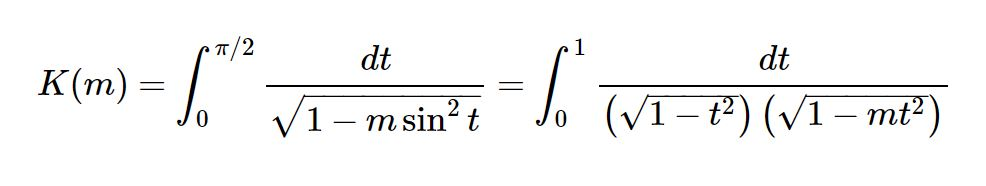
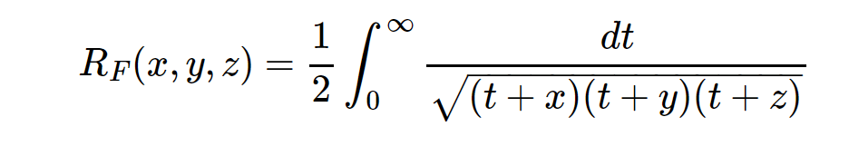
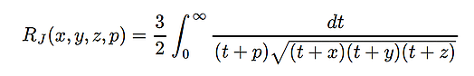

complete
the complete elliptic integral of the first kind
elliptic_k(m)elliptic_k2(m) == elliptic_k(m^2)

the complete elliptic integral of the second kind
elliptic_e(m)elliptic_e2(m) == elliptic_e(m^2)

the complete elliptic integral of the third kind
elliptic_pi(n, m)elliptic_pi2(n, m) == elliptic_pi(n, m^2)

incomplete
the incomplete elliptic integral of the first kind
elliptic_f(phi, m)elliptic_f2(phi, m) == elliptic_f(phi, m^2)

the incomplete elliptic integral of the second kind
elliptic_e(phi, m)elliptic_e2(phi, m) == elliptic_e(phi, m^2)

the incomplete elliptic integral of the third kind
elliptic_pi(n, phi, m)elliptic_pi2(n, phi, m) == elliptic_pi(n, phi, m^2)

symmetric (Carlson)
- the symmetric elliptic integral of the first kind
elliptic_rf(x, y, z)

- the symmetric elliptic integral of the second kind
elliptic_rg(x, y, z)

- the symmetric elliptic integral of the third kind
elliptic_rj(x, y, z)
